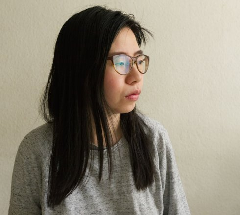

lange nacht der museen

Aiko Okamoto geb. in Kyoto. Seit 2003 ist sie in Deutschland und arbeitet nach ihrem Kunststudium an der Akademie der Künste in München (Klasse Vom Bruch) an der Schnittstelle von Clubkultur und Bildende Kunst. Sie ist Mitglied von „female:pressure” und Mitbegründerin von OKONOMA.
Vanessa Ivan geb. 1991. Studium an der Akademie der Bildenden Künste in München (Klasse Julian Rosefeldt). Tätig als Kamerafrau für die Münchner Kammerpiele. Musicalbumvideo „Qualm“ für Helena Hauff, 2018.
Nalan aka slimgirl fat ist Sängerin und Produzentin. Ihre Projekte sind u.a. Gaddafi Gals und Nalan381. Ende 2018 veröffentlichte sie ihre Debüt-EP „ugly“. Ihr Sound wurde einmal beschrieben als „emotionaler Zusammenbruch der improvisierten Geste“.
overhead performance
M: slimgirl fat | K: Vanessa Ivan
Video: Aiko Okamoto
Mit Overhead-Projektor und Beamer schafft Okamoto einen atmosphärischen Space für den live erzeugten elektro-akustischen Sound.